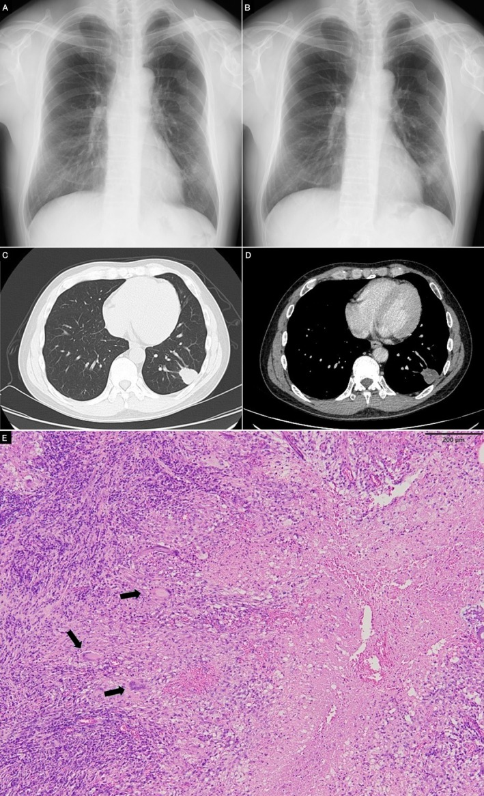
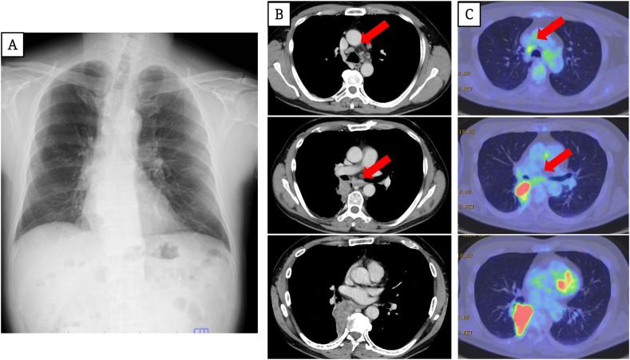

Рак лёгкого
Гистологическая гетерогенность и кинетика роста рака лёгкого
Рак лёгкого — злокачественная опухоль, исходящая из эпителия бронхов или альвеол. Выделяют три основных гистологических типа: мелкоклеточный рак лёгкого (низкодифференцированная опухоль из мелких клеток с небольшим ободком цитоплазмы, растёт быстро, рано даёт отдалённые метастазы), аденокарцинома (образована железистыми структурами, чаще возникает на периферии, самый распространённый тип) и плоскоклеточный рак лёгкого (происходит из метаплазированного бронхиального эпителия, располагается центрально, растёт сравнительно медленно).
Главный показатель кинетики — время удвоения объёма: чем ниже дифференцировка клеток, тем оно короче. Срок от возникновения до достижения диаметра 1 см составляет: при мелкоклеточном раке — 2,4 года, при аденокарциноме — 7,2 года, при плоскоклеточном — 13,2 года.[Кузин, с. 164]
13 лет роста плоскоклеточного рака протекают без симптомов, если не затронут просвет бронха. При центральном бронхопульмональном раке в начале развития у 80–90 % больных возникает кашель (обычно списываемый на курение или бронхит), поэтому медленный рост не защищает от поздней диагностики, а лишь удлиняет окно раннего выявления.[Синдромология, с. 16]
Клинико-анатомическая и международная классификация рака лёгкого
В РФ используется клинико-анатомическая классификация (1956 г., 4 стадии), сопоставляемая с системой TNM (Tumour — Nodus — Metastasis).[Кузин, с. 102]
| Стадия (1956 г.) | Критерий T (опухолевый узел) | Критерий N (регионарные лимфоузлы) | Критерий M (отдалённые метастазы) |
|---|---|---|---|
| I | до 3 см, в пределах одного сегмента или сегментарного бронха; плевра не прорастает | N0 — лимфоузлы не поражены | M0 — нет |
| II | более 3 см или прорастание висцеральной плевры; в пределах доли или долевого бронха | N1 — метастазы в бронхопульмональных и корневых лимфоузлах на стороне опухоли | M0 — нет |
| III | переход на соседнюю долю, главный бронх или прорастание в грудную стенку, диафрагму, средостение | N2 — метастазы в медиастинальных лимфоузлах | M0 — нет |
| IV | любой T, любое местное распространение | любой N | M1 — отдалённые метастазы: печень, головной мозг, кости, надпочечники, противоположное лёгкое |
Граница I стадии (T до 3 см, N0, M0) даёт 5-летнюю выживаемость ≥ 90 %. Время достижения этого размера: аденокарцинома — 7,2 года, плоскоклеточный рак — 13,2 года, мелкоклеточный — 2,4 года. Во II стадии добавляется N1 (на стороне поражения); выживаемость после расширенных резекций возрастает с 27 % до 55 % по сравнению со стандартной. III стадия означает выход за долю или N2 (резектабельность сомнительна). IV стадия определяется критерием M1 (метастазы: печень, головной мозг, кости, надпочечники, контралатеральное лёгкое).
Клиническая стадия (cTNM) устанавливается до операции и определяет план лечения; патоморфологическая (pTNM) формулируется после операции по удалённому препарату, уточняя прогноз и показания к адъювантной терапии.
Центральный рак лёгкого: клиника и диагностика
Центральный рак лёгкого исходит из слизистой оболочки главных, долевых или сегментарных бронхов.

Эндобронхиальный рост суживает просвет бронха. Преобладающий перибронхиальный рост идет вдоль стенки снаружи в ткань лёгкого: опухоль рано вовлекает сосуды (быстрое метастазирование) и нервы корня (плевропульмональный болевой синдром). Полное перекрытие бронха вызывает обтурационный ателектаз (спадение ткани; перкуторно — укорочение звука, аускультативно — ослабление/отсутствие дыхания). У ~30 % больных при первом обращении выявляют признаки ателектаза или обтурационной пневмонии.
На КТ при ателектазе видна коллабированная ткань в виде однородного затемнения со смещением средостения в сторону поражения. При бронхоскопии выявляется сужение просвета и бугристая слизистая; взятие биопсии дает морфологический диагноз. Пример: больной 63 лет (кашель, кровохарканье 2 месяца); КТ показала массу в правом верхнедолевом бронхе, сужение его до щели, коллапс верхней доли и подтягивание средостения вправо; фибробронхоскопия с щипцовой биопсией из 3 точек верифицировала плоскоклеточный рак.
Периферический рак лёгкого
Периферический рак лёгкого возникает в субсегментарных бронхах, бронхиолах или паренхиме лёгкого.

Длительное бессимптомное течение — определяющая черта периферической формы: ранние признаки возникают только в 5 % случаев. Узел часто выявляют случайно при рентгенографии как шаровидное образование (округлое однородное затемнение). До диаметра < 2 см опухоль обычно не даёт регионарных метастазов (ранняя стадия). Выраженные симптомы (кашель, одышка, боль, затем слабость, анорексия, похудение) присоединяются позже при сдавлении/прорастании соседних структур.[Кузин, с. 131]
Медиастинальная форма рака лёгкого и пути диссеминации
Медиастинальная форма рака возникает при прямом прорастании или массивном лимфогенном метастазировании в узлы средостения при скрытом или малом первичном очаге (характерна для мелкоклеточного рака).

Разрастающиеся лимфоузлы сдавливают структуры средостения:
1. Сдавление тонкостенной верхней полой вены формирует медиастинальный синдром (отёчность лица/шеи, расширение подкожных вен груди, сухой кашель), встречающийся у 30–40 % больных с распространённым процессом.[Синдромология, с. 14] На КТ виден узел (например, 60 мм в корне правого лёгкого) и конгломераты узлов (в позициях 4R и 7).
2. Сдавление левого возвратного гортанного нерва субаортальными и параортальными узлами вызывает его парез, односторонний паралич голосовой складки и дисфонию (осиплость). Правый возвратный нерв поражается реже.
3. Гематогенные и лимфогенные метастазы в сердце (узлы до 5 см) приводят к кардиомегалии, прогрессирующей сердечной недостаточности и аритмиям.[Синдромология, с. 183]
4. Прогрессирование по лимфатической цепочке приводит к поражению левой надключичной зоны с формированием вирховского метастаза (Virchow's node, signe de Troisier) — признака стадии M1 (при раке лёгкого левая надключичная зона поражается особенно закономерно, тогда как опухоли гортани и глотки дают шейные метастазы в 80 % случаев).
Принципы отбора пациентов и показания к хирургическому лечению
Хирургическое лечение — единственный метод радикального излечения рака лёгкого. Отбор строится на трёх оценках: характере опухоли, её распространённости и состоянии больного. Главный принцип: хирургия показана при одновременном выполнении условий резектабельности опухоли и функциональной операбельности пациента.
Первый этап — морфологическая верификация. Плоскоклеточный рак лёгкого и аденокарцинома при операбельной стадии подлежат хирургическому удалению. Мелкоклеточный рак лечат преимущественно химиотерапией. Высокая степень анаплазии требует осторожного расширения показаний к адъювантному лечению.
Резектабельность опухоли — анатомическая возможность её полного удаления в пределах здоровых тканей. К резектабельным относят стадии I–III по TNM при отсутствии отдалённых метастазов (M0). Опухоль менее 2 см в диаметре без поражения лимфатических узлов соответствует I стадии (пятилетняя выживаемость достигает 90% и более). Наличие отдалённых метастазов (M1), карциноматоза плевры или прорастания в магистральные сосуды делает опухоль нерезектабельной.
Функциональная операбельность оценивается по спирометрии и бодиплетизмографии: если прогнозируемый послеоперационный ОФВ₁ опускается ниже 40% от должного, риск дыхательной недостаточности неприемлем. Сердечно-сосудистую толерантность определяют кардиопульмональным нагрузочным тестированием или подъёмом по лестнице (неспособность подняться на два пролёта указывает на высокий риск).
Сопутствующая патология (тяжёлая ИБС, некоррегированные аритмии, тяжёлая или крайне тяжёлая ХОБЛ, некомпенсированный сахарный диабет, выраженная почечная недостаточность) повышает риск послеоперационной пневмонии, несостоятельности культи бронха и тромбоэмболии. Возраст старше 75 лет — относительное противопоказание.
Последовательность отбора: морфологическая верификация и стадия по TNM → оценка резектабельности (лучевые методы, медиастиноскопия) → оценка функциональной операбельности (спирометрия, кардиопульмональное тестирование, ЭхоКГ) → анализ сопутствующей патологии. Решение принимает мультидисциплинарная команда (торакальный хирург, онколог, пульмонолог, анестезиолог).
Противопоказания к радикальным операциям на лёгких
Отрицательный ответ на вопрос о резектабельности опухоли или функциональной операбельности пациента делает радикальное вмешательство невозможным.
| Группа | Вид противопоказания | Конкретные ситуации |
|---|---|---|
| Онкологические | Абсолютные | Отдалённые метастазы; карциноматоз плевры; невозможность радикального удаления опухоли, прорастающей в средостение или грудную стенку |
| Функциональные (соматические) | Абсолютные | Декомпенсация сердечно-сосудистой системы; декомпенсация дыхательной системы; некорригируемые тяжёлые сопутствующие заболевания |
| Функциональные (соматические) | Относительные | Биологический возраст старше 75 лет |
Абсолютные онкологические противопоказания:
- Отдалённые метастазы в печень, головной мозг, кости или надпочечники (пятилетняя выживаемость после удаления единичных лёгочных метастазов — 10–30 %).
- Карциноматоз плевры — массивное обсеменение плеврального листка множественными узелками.
- Онкологическая нерезектабельность — врастание в структуры средостения (крупные сосуды, трахею, пищевод) или грудную стенку, не позволяющее удалить опухоль радикально.
Абсолютные функциональные противопоказания включают декомпенсированную сердечную недостаточность, тяжёлые нарушения ритма, нестабильную стенокардию, декомпенсированную дыхательную недостаточность и некорригируемые тяжёлые заболевания (печёночную, почечную недостаточность, нарушения свёртывания).
Возраст старше 75 лет — относительное противопоказание: учитывается биологический возраст и общий функциональный резерв пациента.
Радикальные хирургические вмешательства при центральном раке лёгкого
Центральный рак лёгкого исходит из крупных бронхов. Пятилетняя выживаемость при карциноме бронха составляет 25 %, а 75 % больных неоперабельны при постановке диагноза.[Синдромология, с. 22]
Лобэктомия — удаление доли лёгкого с долевым бронхом, долевой артерией и венами — стандарт при поражении в пределах доли. Порядок обработки элементов корня: сначала перевязывают и пересекают долевую артерию, затем долевую вену, и только потом прошивают бронх. Чистоту края резекции подтверждают срочным гистологическим исследованием.
При распространении опухоли нижнедолевого бронха на промежуточный бронх правого лёгкого выполняют билобэктомию — удаление двух долей единым блоком (верхняя или нижняя). При нижней билобэктомии выделяют и пересекают артерии средней и нижней долей, нижнюю лёгочную вену, затем ствол промежуточного бронха у правого главного бронха. На левом лёгком из-за отсутствия промежуточного бронха в аналогичной ситуации выполняют пневмонэктомию.
Пневмонэктомия (удаление всего лёгкого) выполняется при поражении главного бронха или сосудов корня лёгкого. В пределах перикарда последовательно выделяют, перевязывают и пересекают лёгочную артерию, вены и главный бронх (у трахеи справа или у киля трахеи слева). Летальность составляет 10–20 %.
При любом объёме резекции обязательна систематическая медиастинальная лимфодиссекция — полное иссечение клетчатки с лимфоузлами средостения в анатомических границах (трахея, верхняя полая вена, аорта, перикард, диафрагмальный нерв) для уточнения pTNM и выявления микрометастазов.
Эндобронхиальная лазерная деструкция опухолей лёгкого
При обтурации просвета бронха central-раком эндобронхиальная лазерная терапия применяется через фибробронхоскоп для паллиативного восстановления проходимости дыхательных путей.
При частичном стенозе (просвет сохранён более чем на треть) лазер применяют для гемостаза и безопасной биопсии. При субтотальной и тотальной обтурации с ателектазом у нерезектабельных или функционально неоперабельных пациентов лазерная деструкция — основной метод немедленной реканализации.
При I стадии (опухоль до 2 см, без прорастания стенки бронха) возможна фотодеструкция опухоли — полное термическое послойное разрушение очага без торакотомии (часть больных переходит в группу T0).
При II–III стадиях проводят поэтапное лечение: за первый сеанс коагулируют и некротизируют поверхностный слой, за второй — удаляют струп щипцами и воздействуют на следующий слой. Повторные эндоскопические вмешательства позволяют контролировать симптомы и предупреждать постобструктивную пневмонию.
При хорошо дифференцированном плоскоклеточном раке размером менее 5 см лучевая терапия без операции даёт эффект у 80 % больных; лазерная реканализация часто предшествует или сопутствует лучевому курсу.
Хирургическое лечение метастатического поражения лёгких
Через лёгочное русло проходит весь объём венозной крови большого круга, поэтому метастазы в лёгких выявляются почти у 30 % онкологических больных. При злокачественной листовидной опухоли (tumor phyllodes) молочной железы гематогенная диссеминация идёт преимущественно в лёгкие, минуя лимфоузлы.
Лёгочная метастазэктомия — удаление метастазов в лёгких — оправдана при выполнении условий:
- первичная опухоль радикально удалена или контролируется;
- отсутствуют внелёгочные метастазы;
- функциональный резерв дыхания допускает резекцию;
- поражение является олигометастатическим (не более 4–5 анатомически доступных узлов).
Пятилетняя выживаемость после метастазэктомии составляет 10–30 %. Результат выше при длинном безрецидивном интервале и медленно растущих метастазах (остеосаркома, колоректальный рак) и ниже при быстро прогрессирующих опухолях.
Источники
- Госпитальная хирургия. Синдромология. Миланов 2013
- Хирургические болезни. Кузин
Иллюстрации
- Опухоль главного бронха на КТ — Radiology Case Reports, PMC13418606, CC BY, europepmc.org/article/PMC/PMC13418606
- Сужение бронха при бронхоскопии — Radiology Case Reports, PMC13418606, CC BY, europepmc.org/article/PMC/PMC13418606
- Рост тени в лёгочном поле — Respirology Case Reports, PMC12975290, CC BY, europepmc.org/article/PMC/PMC12975290
- Узел корня лёгкого и лимфоузлы средостения — PMC13380134, CC BY-NC-ND, europepmc.org/article/PMC/PMC13380134